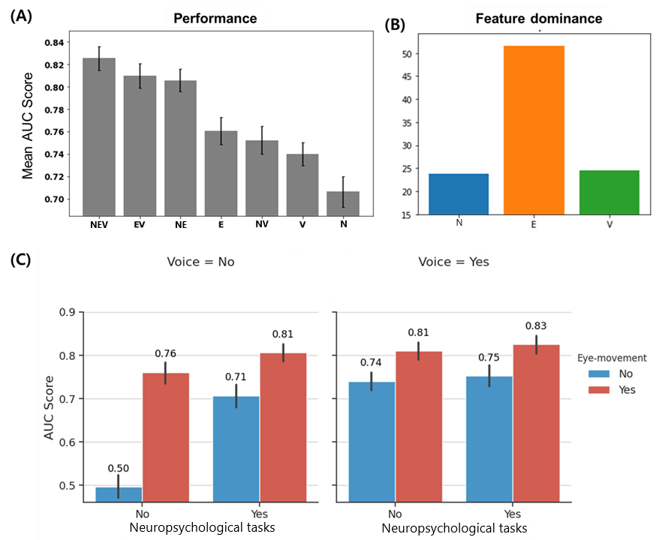

Background & Objective
Traditional neuropsychological assessments (NPAs) are widely accessible and cost-effective, they are time-consuming, prone to examiner variability, and susceptible to patient fatigue as well as educational biases.
While fluid and imaging biomarkers serve as clinical gold standards, they are often invasive or costly.
To address these challenges, our team developed an accessible and scalable mobile solution called DACI (Digital Assessment of Cognitive Impairment).
DACI utilizes three digital biomarkers (DBMs): neuropsychological, eye movement, and voice.
While many studies have examined their diagnostic value individually, limited research has systematically evaluated how individual and combined DBMs perform in multimodal settings.
Using a systematic factorial approach, we quantified the individual and synergistic contributions of each DBM to classification performance.
TL;DR: Our findings suggest that multimodal DBMs act as powerful supplements to enhance classification performance rather than outright substitutes for classical means.
Methodology & DACI Framework
We evaluated 449 participants using the DACI, which is comprised of eight tasks covering executive function, memory, language, attention, and calculation. Using an ensemble-based machine learning approach, we extracted 725 features across the modalities and applied SHAP values alongside Recursive Feature Elimination Cross-Validation (RFECV) to identify optimal feature sets.
Key Findings & Multimodal Synergy
The fully integrated multimodal model combining neuropsychological, eye movement, and voice data achieved the highest classification performance with a mean AUC of 0.83, a sensitivity of 0.87, and a specificity of 0.72. Ablation studies and feature importance analyses revealed that eye movement features contributed most significantly to classification dominance (~52% of feature importance), demonstrating high predictive power even as a single input modality. Meanwhile, voice and neuropsychological components provided supplementary synergy, proving that integrating multimodal digital biomarkers builds a more robust and scalable screening framework for early cognitive decline.
